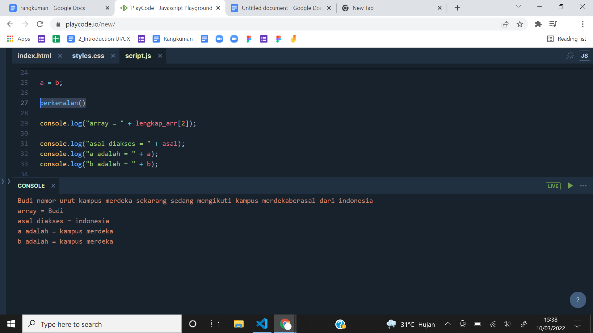
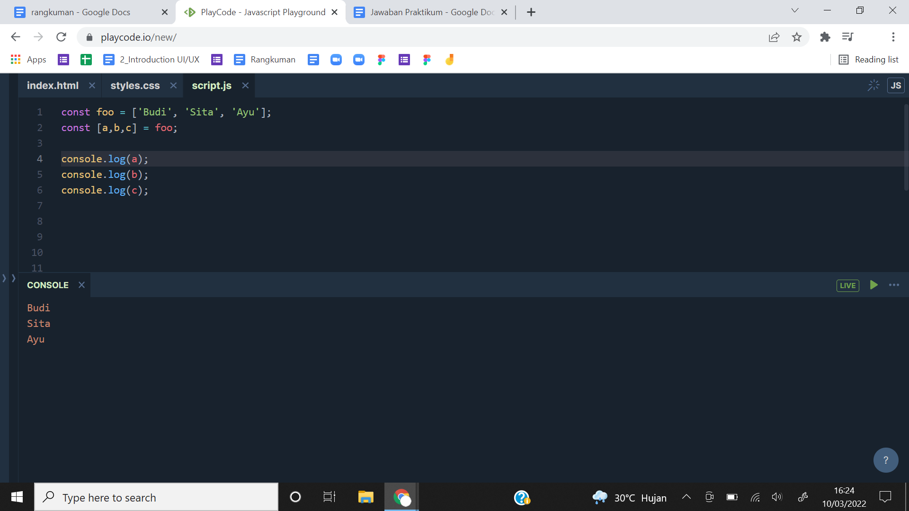
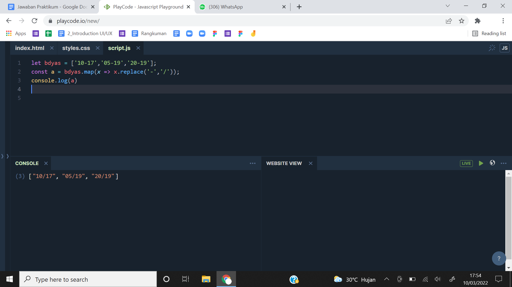
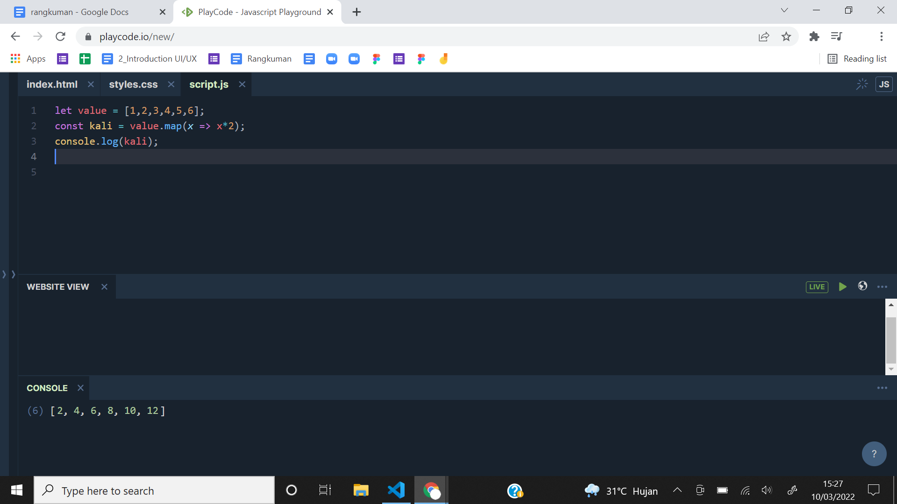
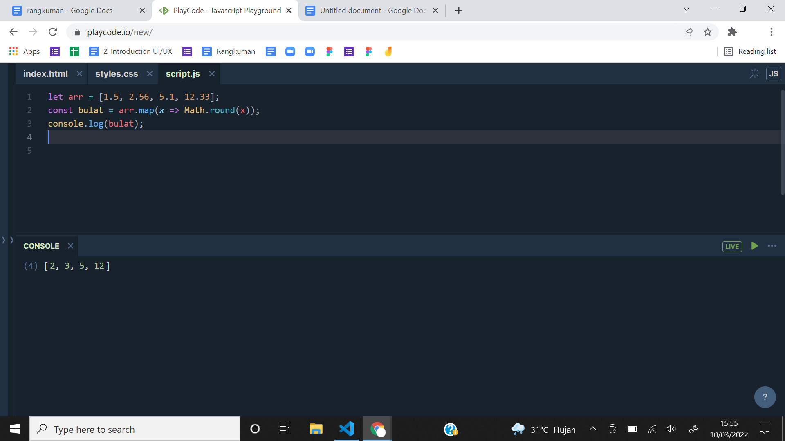

- Javascript adalah bahasa pemrograman yang High-Level, Scripting, Untyped, dan Interpreted.
- Declaration atau deklarasi merupakan sebuah proses pembuatan variabel untuk menyimpan data.
- Macam-macam pendeklarasian dalam javascript
- Redeclaration atau deklarasi ulang adalah mendeklarasikan kembali variabel dengan nama yang sama. Disini hanya dapat dilakukan jika kita menggunakan var.
- Reassignment adalah memberikan nilai baru pada sebuah variabel yang sebelumnya telah memiliki nilai sebelumnya. Disini hanya dapat dilakukan jika kita menggunakan var dan let.
- Scoping adalah menentukan dimana variabel, fungsi, dan objek diatur dan dapat diakses dalam kode kita. Jadi variabel dikendalikan oleh lokasi deklarasi variabel.
- Macam-macam scoping pada javascript
- Hoisting adalah pembuatan beberapa jenis variabel atau fungsi yang dapat diakses atau digunakan dalam kode sebelum dideklarasikan.
- Deklarasi var dan function adalah hoisted, jadi mereka dapat digunakan bahkan sebelum deklarasi itu sendiri terjadi.
- Let dan const tidak hoisted, jadi mereka tidak dapat digunakan bahkan sebelum deklarasi terjadi.
- Type data javascript
Unit pemrosesan terkecil dan elemen paling sederhana yang tersedia dalam bahasa pemrograman. Type data primitive antara lain String, Boolean, Number, bigInt, Undefined, Null, Symbol (ES6).
Unit yang menyimpan properti dan fungsi (method)
- Type data objects antara lain object, array, function, date, set, map, weak set, weak map.
- Destructuring adalah ekspresi dari javascript yang memungkinkan untuk menyalin nilai dari array, atau properti dari objek, ke dalam variabel yang berbeda.
- Spread syntax dapat digunakan ketika semua elemen dari object atau array perlu dimasukkan ke dalam semacam daftar.
- Method merupakan sebuah fungsi yang terkait dengan object, memuat programnya sesederhana mungkin sesuai kegunaan masing-masing.
- Normal flow adalah pengeksekusian statement dari atas ke bawah atau kiri ke kanan secara berurutan.
- Control flow adalah mengatur alur eksekusi pada statement atau jalannya program sesuai dengan keinginan kita.
- Cara melakukan control flow kita dapat menggunakan
For, While, Do While
If..else, Switch, Block, Try..Catch, Break, Continue, Throw
- Function pada Javascript merupakan sebuah object karena memiliki properti dan juga method, function sendiri digunakan untuk melakukan serangkaian komputasi/prosedur yang dapat digunakan berulang kali.
- Synchronous adalah mengeksekusi setiap perintah satu persatu sesuai urutan kode yang dituliskan.
- Asynchronous adalah hasil eksekusi atau output tidak selalu berdasarkan urutan kode, tetapi berdasarkan waktu proses.
- Class merupakan prototipe dari suatu object yang akan kita buat.
- Constructor adalah method di dalam class yang akan selalu terpanggil pertama kali ketika membuat object.
- Method adalah sebuah fungsi yang berada di dalam class.
- Attribute adalah kumpulan dari variabel yang membentuk object yang dimiliki oleh suatu class.
- Extend adalah kelas anak dari kelas induk.
- Document Object Model atau DOM adalah API yang digunakan untuk HTML yang mempresentasikan halaman web pada suatu dokumen menjadi sebuah object.
    